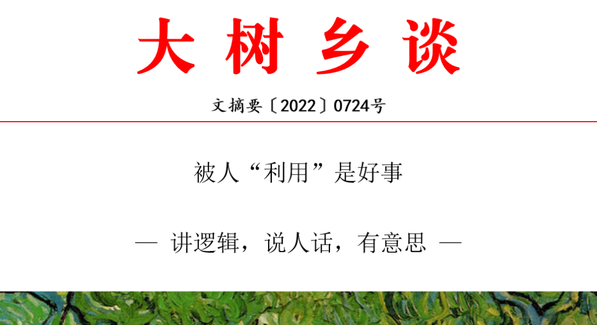

经验分享：如何构建更稳固的人脉？

- 1 -
昨天《谈谈职业发展：人生处处可选择》，谈到人际关系，大家都知道一人力薄、需要融入群体，但到底怎么构建稳固的人际关系呢？谈下小镇的经历和体会，在人际关系上小镇经历了三个阶段：第一阶段：抗拒刚工作前几年，当时在基层工作，除了领导带着出去，下班之后往往自己一个人待着，极少出去社交、结识朋友，日常往来就同期的几个人。原因很简单，就是有些内向，不知道或者不敢于与人交际，觉得特别累心。不过也有好处，现在虽然已经多年不见了，但当年关系不错的现在仍然关系很好。
但这毕竟不利于发展。第二阶段：增量来北京之后，城市、环境、岗位等等都变了，适应了挺长时间。当时刚到新单位，领导还专门提醒：见人别老是点头哈腰的，把头抬起来，腰挺直，说话慢点，对方是级别高又怎样，要不卑不亢。非常感谢领导的多次指导，从接人待物的仪态、语气等等入手，很快就从与人交流的慌张中走了出来，虽然内心还是有些不知所措，但表面上越来越沉稳了，于是就开始进行社交增量。八项规定后，各种酒局少了很多，但朋友之间、同事之间交流越来越多，有一整子甚至达到每周都有几次的程度，几年时间光微信好友就增加了上千人。
那个时候也确实觉得好像自己人脉特别广泛，天南地北、各个部门、各个行业都有朋友，也就越来越沉浸其中。这一阶段似乎是每一个年轻人都要经历的，就像领导劝小镇一样，小镇现在也开始劝新的年轻人，注意把握度，没必要过于热衷于这些表面热闹。但显然，非得自己经历才能真正明白，所以后来小镇也就不多说了，毕竟交浅言深也是大忌。第三阶段：减量这也是昨天《谈谈职业发展：人生处处可选择》提到的，随着年龄增长、担子变重、身体也开始走下坡路，再像过去那样增量已经撑不住了，而且社会对不同年龄的人要求不一样。
有些孟浪、错误，20来岁的时候没啥，毕竟“年轻人犯错误，上帝都会原谅”，小镇也曾经因为某些事被广为传播，甚至都有一千多公里外的朋友打电话来慰问。但如果到了30多岁还干这样的事，那就不像样了，必须调整。真正令小镇开始调整的，是另一位领导。他说：不要痴迷于酒肉朋友，那并不可靠，真正可靠的人际关系一定是工作中产生的彼此信赖。小镇越琢磨越觉得确实如此，陌生人社会信赖很难达成，但是一旦实现，人与人之间的关系会变得特别稳固，而且还特别有助于自己的形象提升。
在《人生前35年的个人发展方法论》中，“工作中五年（大概26-30岁）”强调一定要打造好的个人口碑，关键就是让更多人觉得可信；而在“工作后五年（大概31-35岁）”重点是将个人形象提升到打造个人品牌，最重要的就是“有能力”“可信赖”。在《全球凛冬将至，我们个人该如何做好应对？》将上述的点进一步展开了。小镇相信一个在职场道路上比同龄人走的更快、更稳的前辈，他的人生经验一定值得好好琢磨，对小镇这么说而不是对别人，自然是在提点小镇。
从那时开始，小镇就有意识地做社交减法，把更多的时间用在工作上，无论任何人因为任何工作的事情找到小镇，是小镇负责的绝不推诿，不是也绝不简单回绝，而是自己去询问确认到底由哪个部门、谁负责，再告知对方正确的路径。除此之外，小镇还特别注重工作的配合，任务只要接下来了，无论多难、多复杂，一定履行承诺，只能提前、只能做得更好。到后来甚至有人专门打电话找小镇，说“我知道这件事不归你管，但我找了好多人了就是搞不清楚到底该找谁，就想到了你”，这是非常大的认可。
- 2 -
在有些人看来，这不就是被人利用、吃亏了吗？如果从这一次来看，确实吃亏了，自己的本职工作这么多，还要帮别人解决不相干的问题，大概率以后也不会有求于他，自己付出了努力却没得到对应的收益。但这种想法过于短视，小镇昨天在《谈谈职业发展：人生处处可选择》提到，中国人进入工业化时代不过30多年，大多数人习惯的仍然是熟人社会那一套，但社会已经进入陌生人社会，就要学会适应新的人际关系。在陌生人社会里，每个人都被放入了更加广阔的世界，可以通过更多的途径连接到更多的人，而通过他人与更多人的二次、三次链接，还将几何级数的扩大，注定我们每个人必然要与更多他人连接在一起，很多人是间接连接的。
因此，个人的价值不在于从与他人交际中占一时便宜，而在于能够与多少人建立稳固的沟通渠道，能够被多少人认可、进而推荐给其他人，这些往往是无形的。事实也证明小镇做对了，仅仅几年时间，不仅在帮助他人的过程中加速了解更多事情，建立了更加系统的认知，也得到了更多人的认可，这种好的口碑在未来某个时刻很可能带来超额的回报。而承诺的事情一定稳定可靠的完成，仅仅这一点就让合作的伙伴更加信赖，他们知道只要小镇答应了，就一定会按时办到，从无差错；小镇说办不到，他们也都能理解。
少去很多酒局，酒桌上认识的人确实少了，但是工作中认识的人更多了，而且稳固程度截然不同。现在小镇私交很好的朋友，有的就是在几年的工作合作中建立的，反而酒桌上认识的，大多数之后再没联系。
- 3 -
这些人与人相处的道理都是相通的，无论体制内还是体制外。小镇有一位很好的朋友，前几年去某互联网公司了，也是遵循这样的处世方式，始终保持旺盛的工作态度，主动钻研行业和公司业务，还要研究技术的、运营的、投资的事情，不懂就问，学到了就是自己的。为了解决自己面临的问题，自行调研思考解决方案，并且实践验证，效果很不错，然后主动分享。去公司没几个月就已经出名了，只要碰到类似问题，就有天南海北的同事过来咨询、寻求帮助，因为积累扎实，有时候碰到那种一个团队都需要一周时间的完成的紧急任务，只要找到他，甚至可以在一天之内完成，这就是工作能力强+可靠可信的典型例子。
时间长了，口碑上去了，遇到什么问题根本不需要通过组织程序，同事们很痛快的就会响应、帮忙，还时不时的有完全不认识的人跑过来联系，就是因为从别人那里听说的“能干、靠谱”。这样的人，在哪里干不下去？又怎么会担心所谓的“35岁危机”？“吃亏是福”在现代仍然有道理，但绝不代表要当老好人，如果碰到那种不靠谱的，吃一次亏以后心里有数就行了，多和靠谱的人交流，自然更容易建立长期稳固的人际关系，这是“减量”更是“增量”。当然了，这么干的前提一定是有能力，只有能力够强、积累够深，别人解决不了的自己能解决，别人一周才能干完的自己一天就能搞定，才有资格说“靠谱”；而帮助他人解决难题，也是在促进自身成长，积累的策略思路和资料，都是可以复用的，这是非常良性的正循环。
倘若自己拼尽全力都解决不了自己的问题，天天还要加班加点，那还是先提高个人能力吧，年轻的时候，好好钻研工作，要比短暂的热闹重要得多。
其他文章推荐
■ 中央部委公务员的待遇与发展
如果喜欢，还请点赞、“在看”和关注吧 欢迎分享，让更多人发现“大树乡谈”